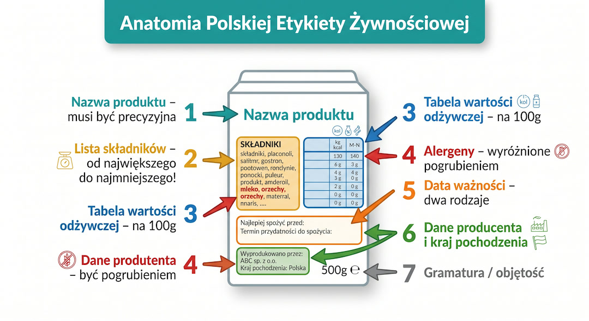
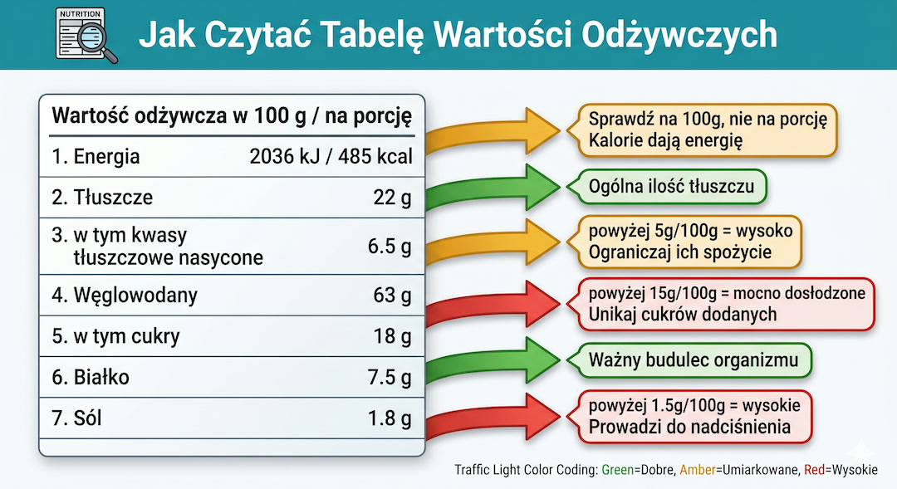
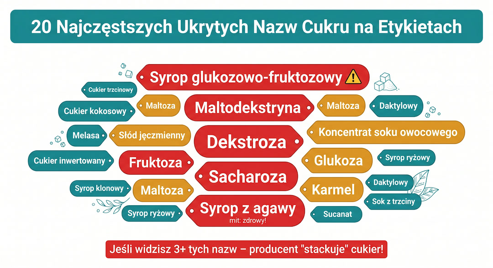

Etykieta to prawda o produkcie, ale napisana małą czcionką i językiem marketingu. Tłumaczymy jak czytać składy, co oznaczają E-numery i gdzie chowa się cukier.
Szybka odpowiedź
Po 50-tce w temacie „Jak czytać etykiety? Przewodnik po składach i E-numerach” najlepiej działa plan oparty na danych: najpierw sprawdź punkt wyjścia, potem wdrażaj zmiany krokami przez 4-8 tygodni i kontroluj efekt. Jeśli pojawia się ból, pogorszenie wyników albo brak postępu przez 2-3 tygodnie, zmniejsz obciążenie i
Kluczowe wnioski
Kluczowe wnioski
- Składniki są wymieniane od największej do najmniejszej ilości – pierwsze trzy to baza produktu.
- E-numery nie zawsze są szkodliwe (np. E300 to witamina C), ale warto unikać barwników i azotynów.
- Cukier ukrywa się pod 50 nazwami – szukaj syropu glukozowego i maltodekstryny.
- W kosmetykach szukaj nazw łacińskich (natura) na początku listy składników INCI.
- Używaj aplikacji takich jak Yuka lub Open Food Facts do szybkiego skanowania produktów.
Etykieta na talerzu – jak wyczytać z niej prawdę?
Zasady są proste, ale trzeba je znać. Na początku patrz przede wszystkim na kolejność składników, bo to ona najszybciej pokazuje, z czego produkt jest zbudowany. Jeśli cukier, syrop albo biała mąka są na czele listy, masz do czynienia z deserem w przebraniu.
Pamiętaj też o nazwie. „Napój o smaku mleka” to nie mleko, a „wyrób seropodobny” nigdy nie stał obok prawdziwego sera. Prawo zmusza producentów do precyzji, więc szukaj konkretów. Kolejną ważną sprawą jest **wartość odżywcza**. Obowiązkowa tabela mówi Ci wszystko o kaloriach, tłuszczach, cukrach i soli. Standardem jest podawanie wartości na 100 g produktu – i to na te liczby patrz, gdy porównujesz dwa różne produkty. Porcje sugerowane przez producenta są często nierealistycznie małe.
I na koniec: daty. „Najlepiej spożyć przed” to data jakości – po tym terminie produkt może stracić kolor czy zapach, ale zazwyczaj jest bezpieczny. Natomiast „Należy spożyć do” to data bezpieczeństwa – po jej przekroczeniu jedzenie może być po prostu groźne dla zdrowia. Nie myl ich, żeby nie wyrzucać dobrych produktów, ale też nie ryzykować zatrucia.

Tabela wartości odżywczej – nie daj się oszukać małym porcjom?
W tej sekcji patrzymy tylko na liczby, bo to one najłatwiej demaskują produkt. Gdy nauczysz się czytać tabelę na 100 gramów, szybciej wychwycisz nadmiar cukru, soli i tłuszczów nasyconych bez zgadywania, co producent chciał ukryć.
Tabela na opakowaniu to Twoja najlepsza przyjaciółka, jeśli wiesz, na co patrzeć. Największą pułapką jest rubryka „na porcję”. Producent może napisać, że ciastko ma tylko 50 kalorii, zakładając, że porcja to.. ćwiartka ciastka. Dlatego zawsze sprawdzaj kolumnę **na 100 g**. To jedyny sprawiedliwy sposób na porównanie produktów.
Na co zwrócić szczególną uwagę po 50-tce? Po pierwsze: **tłuszcze nasycone**. Jeśli jest ich więcej niż 5 g na 100 g produktu, to sygnał ostrzegawczy. Po drugie: **cukry**. Odróżnij węglowodany ogółem od cukrów prostych. Te drugie powinniśmy ograniczać do minimum. Po trzecie: **sól**. Przetworzone wędliny, gotowe sosy i pieczywo to kopalnie soli, która podnosi ciśnienie. Jeśli produkt ma ponad 1,5 g soli na 100 g, uznaje się go za mocno słony.
I jeszcze jedna „czerwona flaga”: tłuszcze trans. Na etykiecie kryją się pod hasłem „tłuszcze częściowo utwardzone” lub „uwodornione”. To najgorszy rodzaj tłuszczu dla Twojego serca i naczyń. Jeśli widzisz te słowa w składzie, lepiej zrezygnuj z zakupu.

E-numery – czy naprawdę trzeba się ich bać?
Dla wielu osób litera „E” brzmi groźnie, ale sama w sobie nie oznacza zagrożenia. To kod dodatków dopuszczonych do żywności po ocenie bezpieczeństwa. Kluczowe jest odróżnienie substancji neutralnych od tych, które przy częstym spożyciu warto ograniczać.
Dla przykładu: E300 to zwykła witamina C, E330 to kwas cytrynowy, a E322 to lecytyna, którą znajdziesz w jajkach. Nie każda litera E oznacza chemiczny ściek. Warto jednak wiedzieć, których dodatków faktycznie unikać. Do najbardziej kontrowersyjnych należą syntetyczne barwniki (tzw. szóstka z Southampton), które mogą wpływać na koncentrację, oraz benzoesan sodu (E211) czy azotyn sodu (E250) dodawany do wędlin.
Zasada kciuka jest prosta: im mniej składników, których nazw nie potrafisz wymówić bez zająknięcia, tym lepiej. Ale nie panikuj na widok każdego „E” – często to tylko skrót nazwy czegoś, co znasz z własnej kuchni.

Ukryty cukier – producent wie, jak Cię oszukać?
Tutaj skupiamy się na cukrze, bo właśnie on najczęściej ukrywa się pod niewinnymi nazwami. Kilka prostych zasad wystarczy, żeby szybciej wyłapywać dosładzane produkty i nie dać się nabrać na opakowanie z hasłami o zdrowym składzie.
To jeden z najczęstszych trików: producent nie chce, żeby cukier był na pierwszym miejscu składu, więc.. rozbija go na kilka różnych rodzajów. Zamiast 30 g cukru, dodaje 10 g fruktozy, 10 g maltodekstryny i 10 g syropu glukozowego. Każdy z nich ląduje niżej na liście, a produkt udaje „mniej słodki”. To tak zwany *sugar stacking*.
Cukier ma ponad 50 imion. Syrop z agawy, zagęszczony sok owocowy, maltoza, dekstroza, melasa – to wszystko to samo paliwo dla Twoich komórek tłuszczowych. Szczególnie uważaj na **syrop glukozowo-fruktozowy**. Jest tani, bardzo słodki i metabolizowany przez wątrobę w sposób, który sprzyja jej otłuszczeniu.
Nie daj się nabrać na hasła „bez białego cukru”, jeśli w składzie widzisz syrop daktylowy albo cukier kokosowy. Biochemia Twojego organizmu nie widzi różnicy – dla trzustki to wciąż ta sama porcja cukru, z którą musi sobie poradzić.

Etykiety kosmetyków – czy Twój krem to sama woda?
W tym fragmencie patrzymy na skład kosmetyku praktycznie, krok po kroku i bez pośpiechu. Dzięki temu łatwiej odróżnisz składnik aktywny, który rzeczywiście działa, od obietnicy marketingowej, która dobrze brzmi tylko na froncie opakowania i nie wnosi wiele do pielęgnacji.
W kosmetykach obowiązuje system **INCI**. Nazwy składników są tu po łacinie (rośliny) lub po angielsku (chemia). Zasada jest ta sama: im wyżej na liście, tym więcej składnika w środku. Jeśli Twój krem reklamuje się „drogocennym olejem z awokado”, a ten olej jest wymieniony po konserwantach (na samym końcu), to znaczy, że w środku jest go tyle, co nic.
Na co uważać po 50-tce? Skóra staje się cieńsza i bardziej skłonna do podrażnień. Unikaj silnych detergentów typu SLS i SLES w szamponach oraz alkoholu denaturowanego (Alcohol Denat. ) wysoko w składzie kremów – te substancje niepotrzebnie wysuszają. Jeśli masz wrażliwą cerę, uważaj na hasło „Parfum” lub „Fragrance” – pod nim kryje się mieszanka substancji zapachowych, które są najczęstszą przyczyną alergii kontaktowych.
Dobrą wiadomością jest to, że nie musisz być chemikiem. Istnieją świetne aplikacje (np. INCI Beauty), które po zeskanowaniu kodu kreskowego od razu mówią Ci, czy skład jest bezpieczny, czy naszpikowany tanią chemią.

Marketingowe triki – jak nie dać się „uwieść” opakowaniu?
Ta część pomaga spojrzeć na etykietę spokojnie i od razu przełożyć ją na codzienny wybór. Właśnie wtedy najlepiej widać, które hasła mają realne znaczenie, a które tylko budują wrażenie zdrowia, naturalności i lepszej jakości produktu.
Producenci wiedzą, że kupujemy oczami. Dlatego używają kolorów ziemi, rysunków liści i haseł typu „0% tłuszczu”. Pamiętaj jednak: **tłuszcz jest nośnikiem smaku**. Jeśli producent go usunął, musiał dodać coś innego, żeby jedzenie było smaczne – najczęściej jest to cukier albo zagęstniki. Produkt „light” wcale nie musi być zdrowszy.
Inna pułapka to hasło „naturalny”. W prawie spożywczym to słowo nie ma ścisłej definicji. „Naturalny aromat” może być wyprodukowany w laboratorium z naturalnych surowców, ale nie ma nic wspólnego ze świeżym owocem. Z kolei na kosmetykach hasło „naturalny” bez odpowiedniego certyfikatu (np. Ecocert) to czysty marketing, bez żadnych gwarancji.
Najlepsza strategia? **Ignoruj przód opakowania. ** Prawda o produkcie zawsze jest z tyłu, napisana małym drukiem. Im krótsza lista składników, tym produkt jest bliższy naturze i zazwyczaj lepszy dla Twojego zdrowia.

Zobacz też:dietę po 50-tce, ukryty cukier, suplementację po 50-tce oraz badania krwi.
Najczęściej zadawane pytania?
Najcz ciej zadawane pytania
Jak najszybciej sprawdzić, czy warto coś kupić?
Stosuj metodę 60 sekund: (1) Sprawdź PIERWSZE 3 składniki. (2) Policz ile składników ma lista – jeśli więcej niż 10 w prostym produkcie (chleb, ser, jogurt), to zły znak. (3) W tabeli sprawdź ilość cukrów na 100 g. To wystarczy, żeby odsiać 90% śmieciowego jedzenia.
Warto przeczytać też: trening siłowy, dieta po 50-tce, sen i regeneracja, badania krwi.
Powiązane tematy: trening siłowy, dieta po 50-tce, sen i regeneracja, suplementacja.
Czym się różni data „spożyć przed” od „spożyć do”?
„Najlepiej spożyć przed” to data jakości – po niej produkt jest zwykle bezpieczny, ale może gorzej smakować. Dotyczy makaronów, mąk czy herbat. „Należy spożyć do” to data bezpieczeństwa – po niej produkt może być trujący. Dotyczy mięsa, ryb i nabiału. Nie ryzykuj z tą drugą datą!
Jak sprawdzić, czy produkt faktycznie jest polski?
Kod 590 na początku EAN to polska firma, ale niekoniecznie polska produkcja. Szukaj oficjalnego białego-czerwonego logo „Produkt Polski” z polską flagą – to jedyna gwarancja, że produkt faktycznie powstał u nas z lokalnych surowców.
Czy aplikacje do skanowania etykiet są wiarygodne?
Są świetnym punktem wyjścia. Aplikacje takie jak Yuka czy Open Food Facts pomagają szybko wyłapać kontrowersyjne dodatki. Pamiętaj jednak, że każda ma swój algorytm oceniania – używaj ich jako podpowiedzi, a nie jako jedynej wyroczni.
Źródła?
To dobry moment, żeby spojrzeć na temat szerzej i przełożyć teorię na codzienne decyzje. Najwięcej zyskujesz wtedy, gdy rozumiesz mechanizm, umiesz ocenić ryzyko i wybierasz rozwiązania, które realnie wspierają zdrowie oraz regularność po pięćdziesiątce.
Źródła po 50-tce warto wdrażać krok po kroku i od razu łączyć teorię z praktyką. Dzięki temu łatwiej utrzymać regularność, poprawić bezpieczeństwo działań i szybciej zauważyć trwałe efekty zdrowotne w codziennym życiu.
- ALAB Centrum Wiedzy — Jak czytać składy
- DOZ.pl Czytelnia — Dodatki do żywności
- Pacjent.gov.pl — Cukier w produktach
- POLMED Zdrowie — Etykiety spożywcze
- Czytamy Etykiety — Etykiety kosmetyków
- Gov.pl — Przewodnik konsumenta
Uwaga: Artykuł ma charakter informacyjny i edukacyjny. Nie zastępuje konsultacji lekarskiej, diagnozy ani leczenia.